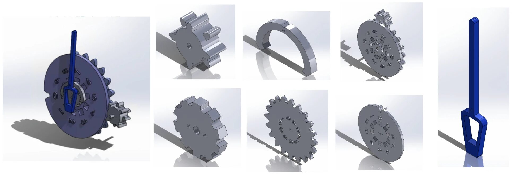
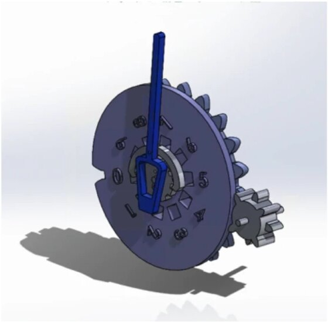
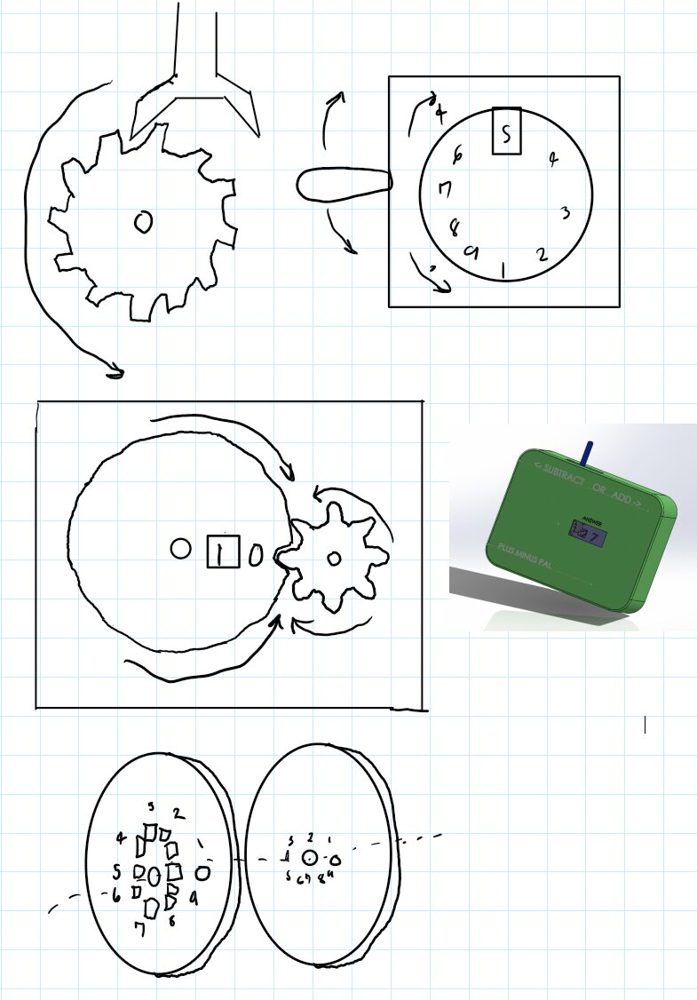
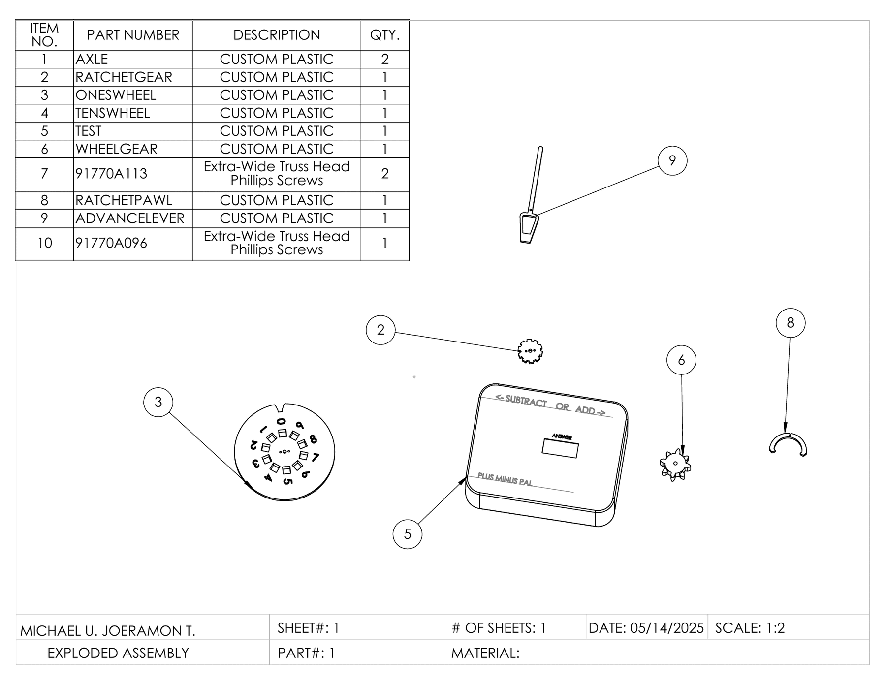
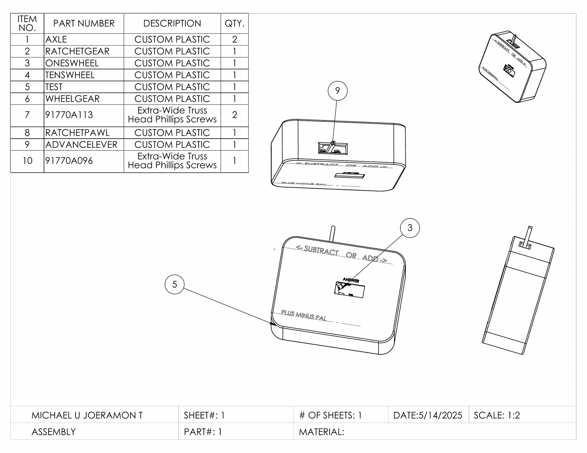
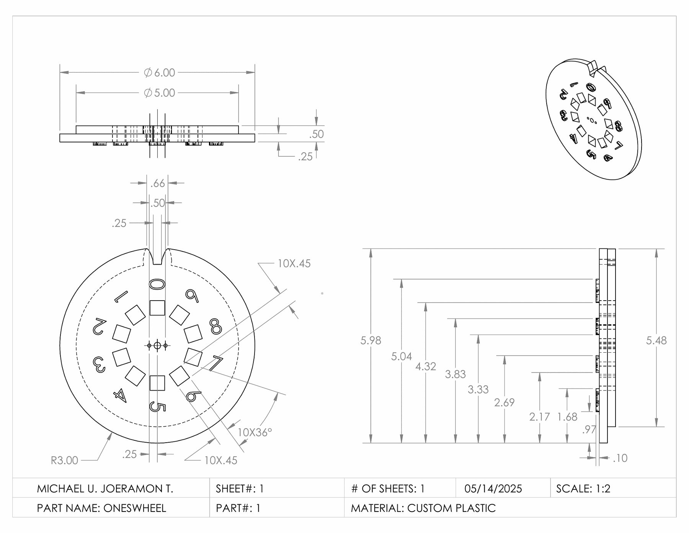

Plus-Minus Pal

The Plus-Minus Pal is a mechanical counter that teaches children ages five to seven to add and subtract, from zero to ninety-nine. Turning the lever right adds and turning it left subtracts. Inside, the lever drives a gear and pawl that moves the ones wheel one step at a time, so a child counts each step instead of memorizing an answer. When the ones wheel passes nine, a Geneva mechanism turns a two-sided gear that advances the tens wheel. Every part rotates on one main axle inside a small case with no loose parts.




